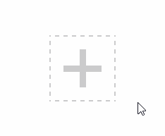

border-width
为什么不支持百分比？
语义和使用场景决定:不因内部大小变化而变化。
同理还有outline,box-shadow，text-shadow等不支持百分比
border-width支持关键字thin,medium(默认值),thick
thin —— 1px
medium —— 3px
thick —— 5px
为何不把默认值设置为thin呢?1px更为常见啊
因为border-style: double至少3px才有效果
border-style
solid
实线，可以用来制作三角形dashed
虚线(chrome/ff下实色区域宽高3:1且虚实宽度为1:1;IE下实色区域宽高为2:1且虚实宽度为1:2 )dotted
点线(chrome/ff下为方点；IE下为圆点)1234<!-- IE下实现圆角效果 --><div class="box"><div class="dotted"></div></div>1234567891011.box {width: 150px;height: 150px;overflow: hidden;}.dotted {width: 100%;height: 100%;background: yellow;border: 149px dotted #cd0000}double
双线
1px: 0+1+0
2px: 1+0+1
3px: 1+1+1
4px: 1+2+1
5px: 2+1+2
6px: 2+2+2
即双线宽度永远相等，中间间隔+-11<div class="line"></div>12345678/*实现菜单icon*/.line {background: #FFF;width: 120px;height: 20px;border-top: 60px double #000;border-bottom: 20px solid #000;}inset/outset/groove/ridge
内凹/外凸/沟槽/山脊
border-color与color
当没有指定border-color的时候，会使用color作为边框色(类似的还有box-shadow，text-shadow等)
|
|
效果如下:

border与background-position
background-position默认根据左上角定位，不能相对右下，那么该如何实现相对右侧定位呢?
border与透明边框
除了上述几个应用到透明边框的例子之外，还可以用来突破可视区域外元素无投影的限制，即让区域内部分透明
border与布局
实现等高布局
|
|